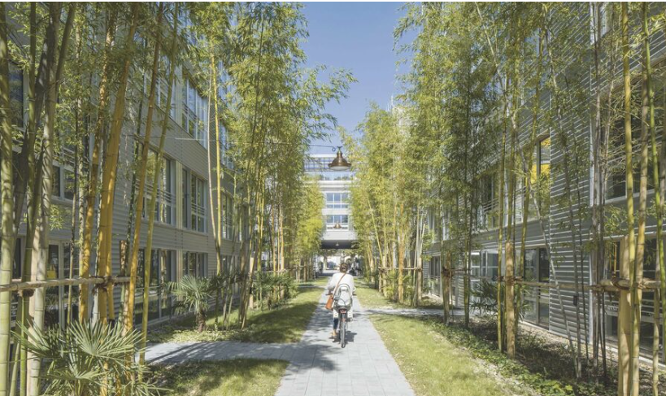

Survolez l'image et agrandissez/réduisez la vue à l'aide de la molette.
Budget: 20 500 000€ HT
Surface: site 2,5 ha, aménagements extérieurs 1,5 ha, bâtiments 25 400 m² SDP
Date début: 2014
Date fin: 2019
Maîtrise d'ouvrage: EPA Bordeaux Euratlantique
Co-traitant(s): Alexandre Chemetoff, bureau des paysages
Description:
Le projet repose sur la reconversion du centre de tri postal de Bègles afin d'accueillir la future Cité Numérique, bâtiment étendard de l’économie numérique de la métropole bordelaise. Elle est destinée à accueillir un
grand nombre d’entreprises du secteur, mais aussi des centres de formation, un restaurant, une crèche... D'une surface de 2,5 hectares, le terrain est situé en limite du quartier des Terres Neuves, à l'angle du Boulevard Jean-Jacques Bosc et de la rue Marc Sangnier.
Porté par l’EPA Euratlantique, la Cité numérique est le fruit d’une synthèse élaborée dans une démarche itérative entre le programme et le centre de tri, affinée au fur et à mesure de notre connaissance des lieux
et des nombreuses rencontres avec les futurs occupants. Le site, comme le bâtiment lui-même, constituent
des ressources non seulement pour des raisons inhérentes à la valeur de l’héritage et au maintien de l’identité des lieux, mais aussi pour des motifs économiques.
Des rues intérieures sont créées avec des façades très vitrées, afin de faire rentrer le plus possible de lumière naturelle dans le bâtiment existant, très épais.
La perte des surfaces correspondantes est cependant compensée par la réalisation de planchers intermédiaires et de surélévations légères implantées sur les toits terrasses. Les locaux sont aménagés a minima : l'objectif étant de permettre aux jeunes start-ups d'emménager à moindre coût et en étant immédiatement opérationnelles.
Dans un souci de prise en compte des critères environnementaux au sens large, et pour compenser
les façades en béton très minérales du bâtiment existant, la Cité numérique est entourée d'un grand jardin,
très largement planté d'arbres, de bambous, de plantes grimpantes... que complètent des dispositifs
d’arrosage et de brumisation disposés sur les façades. Cet ensemble permet de créer un îlot de fraîcheur,
et améliore sensiblement le confort des locaux.
{kind=link}
{kind=link}
{kind=link}
{kind=link}